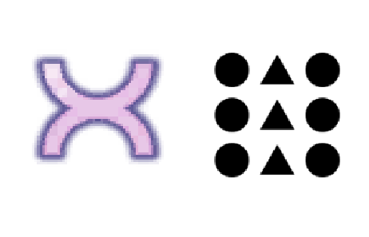
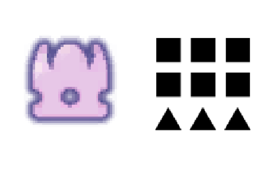
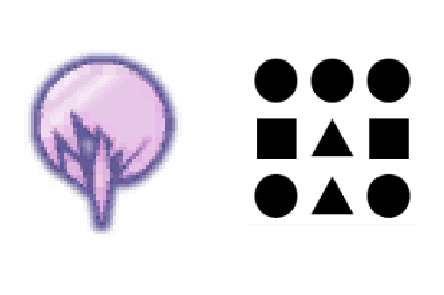
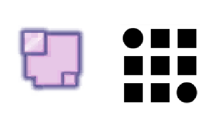
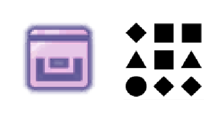

Артефакты в Risk of Rain 2 - как их открыть и что они делают
Aртефакты - особые модификаторы игрового процесса, которые позволяют вам применить к забегу уникальные правила, дающие вам преимущества или предлагающие новые испытания. Система, зарекомендовавшая себя еще в оригинальном Risk of Rain, в сиквеле получила развитие, и репертуар артефактов был серьезно переработан.
Как открывать артефакты
Если вы хотите самостоятельно попотеть в поисках всех подсказок, вам потребуется искать на игровых уровнях коды из символов сеткой 3x3 и делать записи с этими кодами.
Сами коды активируются с помощью специального портала, который располагается под основными платформами локации Sky Meadow, пятой по счету. Отбивайтесь от виспов и прочих монстров и спускайтесь вниз, где увидите загадочные станции и агрегаты.
Видите сетку 3x3 в нижней части скриншота? Именно там и надо будет вводить собранные вами коды. Набрав комбинацию, подойдите к терминалу неподалеку и активируйте его. Если вы все сделаете правильно, активируется портал. Отправляйтесь в него, и вы очутитесь на локации Bulwark's Ambry.
На уровне будет применено правило того артефакта, код которого вы ввели. Вам же надо двигаться в направлении реликвария. Подберите ключ, что находится рядом, и используйте на хранилище. Начнут появляться монстры, при смерти случайным образом роняющие ключи. Использование ключа будет отнимать здоровье к реликвария - это единственный способ наносить ему урон. Когда вы примените последний ключ, хранилище выронит нужный артефакт и откроет портал на первую локацию.
| Артефакт Хаоса (Artifact of Chaos) | 
| Дружественный огонь активен как для вас, так и для монстров. Это включает ваши собственные предметы, наносящие урон по области, вроде Brilliant Behemoth, Will-o'-The-Wisp и подобных. |
| Артефакт Командования (Artifact of Command) | 
| Вы можете выбирать предметы, которые будете получать. Применение сундука открывает меню, где вы и можете сделать свой выбор в зависимости от попавшейся редкости предмета. |
| Артефакт Смерти (Artifact of Death)
| 
| Если один игрок умирает, умирают сразу все. По понятной причине смысл использовать его есть только в кооперативе. Только Dio's Friend предотвратит смерть всей команды. |
| Артефакт Диссонанса (Artifact of Dissonance)
| 
| Противники могут появляться вне зависимости от своих привычных мест обитанияю. |
| Артефакт Загадки (Artifact of Enigma)
| 
| Выдает вам активируемый предмет, который заменяется на новый после каждого применения. |
| Артефакт Хрупкости (Artifact of Frailty)
|
| Урон от падения удвоен и может вас убить. Персонаж Loader не подвержена действию артефакта из-за своих классовых особенностей. |